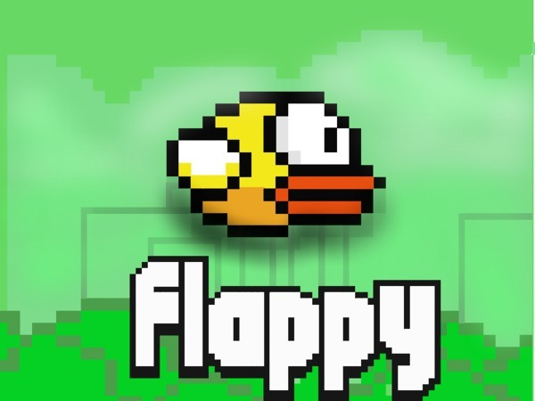

- 

Flappy Bird was a highly addictive game for many people across the world. Developed by one man out of Vietnam named Don Nguyen and .Gears Studio in 2013.
The side-scrolling addiciton has users tap or click the screen repeatedly to affect the birds height as the player navigates around green pipes.
Watch some videos and look at the images of the game to decide if YOU have what it TAKES to PLAY!